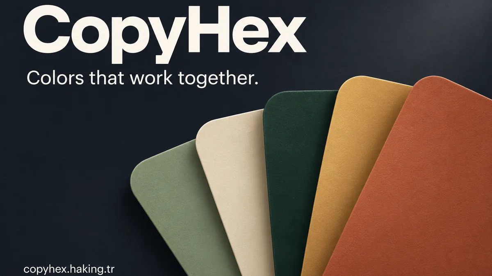
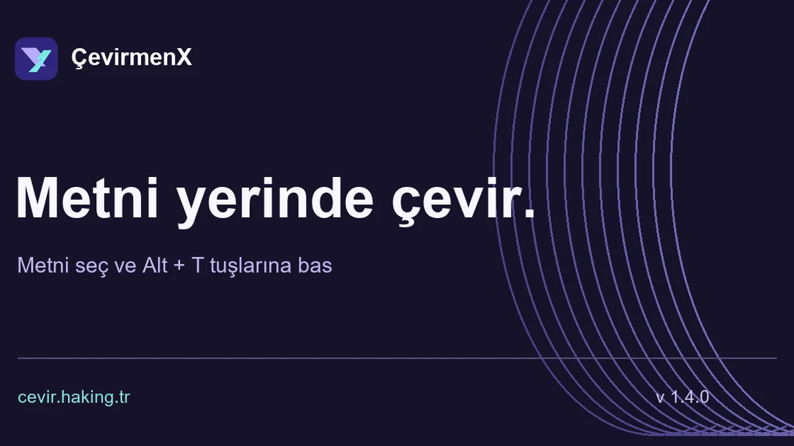
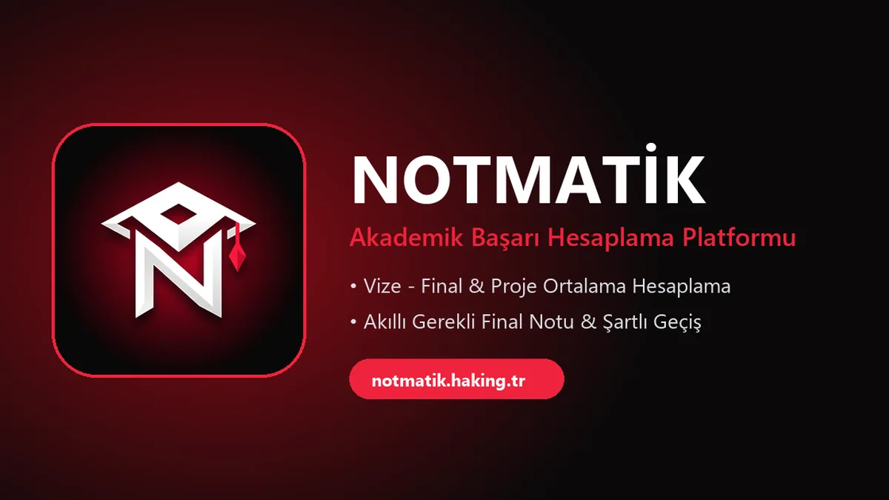

v1.19.2
v1.19.2
HaKING AI
SSE akışlı Türkçe yazılım asistanı, yapılandırılmış Prompt Modu ve Tavily araştırmalı Çılgın Mod.
FastAPISSE AkışıCloudflare WorkersNeon PostgreSQL
Yapay zekâ asistanları, CS2 nicel arbitraj terminalleri, 3D WebGL deneyimleri ve çoklu tarayıcı eklentileri. 15 açık kaynak GitHub projesini, aktif *.haking.tr servislerini ve derin mühendislik haberlerini tek çatı altında keşfedin.
v1.19.2
SSE akışlı Türkçe yazılım asistanı, yapılandırılmış Prompt Modu ve Tavily araştırmalı Çılgın Mod.
 V11.1
V11.1
6.000+ skin ve 354+ Doppler fazıyla sıfır kayıtlı, açık kaynak CS2 çift yönlü arbitraj ve risk terminali.
AI kodlama agentları, Cloudflare Edge dağıtımı, CS2 pazar likiditesi, Core Web Vitals, Neon PostgreSQL ve Prompt Modu üzerine özgün dosya haberler.

Otonom kodlama agentları yaygınlaşırken ekiplerin en büyük darboğazı artık kod üretme hızı değil; belirsiz gereksinimler, unutulan kısıtlar ve doğrulanmamış teslimatlar.
Codex ve AI agentları için ücretsiz keşif soruları ve 5 kredilik denetlenmiş prompt üretimi.
HaKING AI, SPREAD, ÇevirmenX ve CSNAME gibi canlı servisleri neden Cloudflare Workers + Static Assets mimarisiyle yayınlıyorum? Avantajlar, limitler ve güvenlik başlıkları.
CS2 eşya ticaretinde yüzeysel indirim oranları neden yanıltır? 354+ Doppler fazının fiyat ayrışması, 7-8 günlük takas kilidi riski ve sayfa içi canlı Valve Cent komisyon hesaplayıcısı.
Google sıralamalarını ve kullanıcı kalış süresini doğrudan etkileyen LCP, INP ve CLS metrikleri nasıl ölçülür? Görsel WebP sıkıştırması, font yükleme ve sıfır kayma teknikleri.
FastAPI ve Express tabanlı sunucusuz servislerde DATABASE_URL (pooled) ile DATABASE_URL_UNPOOLED ayrımı, SQL göçleri ve atomik kredi muhasebesi nasıl kurulur?
Küçük denemeler değil; canlı alt alan adlarıyla yayında olan, belgelenmiş ve aktif geliştirilen büyük public GitHub projelerim.
 v12.0
v12.0
60 oynanabilir uzay temalı tarayıcı oyunu ve 24 bölümlük Captain Nova Vex hikâye modunu sunan arcade portalı.
 v0.1.0
v0.1.0
3D Dust2 Spray Arenası, 670+ pro e-spor crosshair veritabanı, canlı Viewmodel ve Autoexec yapılandırma paketi.
 v2.0.2
v2.0.2
Gerçek zamanlı geliştirici sohbeti, sesli oda ve sunucu doğrulamalı 3D Okey, Tavla, Satranç & masa oyunları.
 v0.11.5
v0.11.5
Türkçe oyun yamaları, çeviri projeleri ve topluluk modları için modern React/Vite + Express/Neon platformu.
 v2.5.3
v2.5.3
Canlı Steam kütüphane telemetrisi, etkileşimli Three.js 3D HP Victus 16 modeli ve 20 dilli 3D Müze vitrini.

v1.0.66.000+ HEX renk araması, OKLCH 50–950 tema üretici, WCAG kontrast denetimi ve DTCG/CSS token dışa aktarımı.
 v1.1.4
v1.1.4
7 QR veri türü, 2048px PNG/SVG çıktısı ve cihaz içi kamera/görsel taraması sunan gizlilik odaklı web + eklenti paketi.

v1.4.0API anahtarı gerektirmeyen, Alt+T ve sağ tıkla sayfa içi çeviri, çift yönlü kişisel sözlük ve seslendirme eklentisi.

v3.0Üniversite öğrencileri için tam sayı katkılı vize-final-proje ortalama, gerekli final notu ve çevrimdışı hedef takip platformu.
Bu kategorideki tüm ürünler için 15 Projelik Tam Katalog sayfasını inceleyebilirsiniz.
SSE akış gecikmesi, Three.js WebGL performansı, Manifest V3 güvenliği, OKLCH tasarım tokenları ve hibrit arama algoritmaları üzerine derin yazılar.
Yalnızca Google’da değil Bing, DuckDuckGo, Yandex ve ChatGPT/Perplexity/Gemini gibi yapay zekâ aramalarında da görünür olmak için modern statik sitelerde uygulanması gereken eksiksiz kontrol listesi.
Tarayıcı ön yüzü ile model sağlayıcıları arasında nasıl güvenli bir servis sınırı kurdum? SSE akış gecikmesi, Groq/Gemini yönlendirme, ortak kredi muhasebesi ve Prompt Modu mimarisi.
CS2 arbitraj hesaplayıcıları neden sıkça hayali kâr gösterir? Valve’ın cent tabanlı kesinti formülü, 7g/30g satış geçmişi ve Tekli vs. Sepet Meta-Hakem algoritmasının arkasındaki matematik.
QR Scanner v1.1.4 ve ÇevirmenX v1.4.0 geliştirme sürecinden süzülen Manifest V3 service worker kısıtları, mağaza inceleme kuralları ve çoklu tarayıcı paketleme rehberi.
Klasik Okey 3D, 101 Okey 3D, Tavla, Satranç ve sesli oda özelliklerini barındıran Haking Chat’te gizli el güvenliği, sıra senkronizasyonu ve oda yaşam döngüsü nasıl tasarlandı?
Her web aracı için üyelik duvarı ve bulut veritabanı şart mı? NotMatik, CopyHex, CSELL ve QR Scanner’da yerel öncelikli (local-first) mimarinin sağladığı hız ve gizlilik avantajları.
İstanbul Kültür Üniversitesi Bilgisayar Programcılığı öğrencisi ve bağımsız yazılım geliştiriciyim. HaKING çatısı altında günlük problemleri çözen, hızlı açılan, veri gizliliğine saygılı ve açık kaynaklı web ürünleri geliştiriyorum.
Bir projeyi yayına almak benim için işin yalnızca yarısı: o ürünü kurarken hangi mimari takası yaptığımı, hangi performans sınırına çarptığımı ve kullanıcıların aynı problemleri nasıl çözebileceğini haking.tr üzerinde şeffaf teknik yazılarla paylaşıyorum.
Semantik HTML5, OKLCH renk tokenları, sıfır bağımlılıklı JavaScript, Astro, React/Vite ve çevrimdışı PWA.
Python/FastAPI, SSE akışı, Node.js + Socket.IO, Cloudflare Workers, Neon PostgreSQL ve LLM yönlendirme.
Three.js donanım ve müze sahneleri, HTML5 Canvas oyun motorları ve akıcı etkileşim katmanları.
Chrome, Edge ve Firefox için minimum izinli, cihaz içi çalışan Manifest V3 eklentileri.
İnteraktif proje kapsam oluşturucuyla ihtiyacını 2 dakikada netleştir; teknik mimari, zaman planı ve teslimat adımlarını birlikte değerlendirelim.